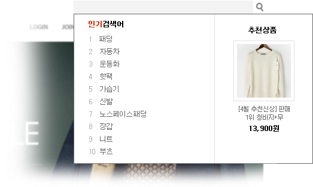
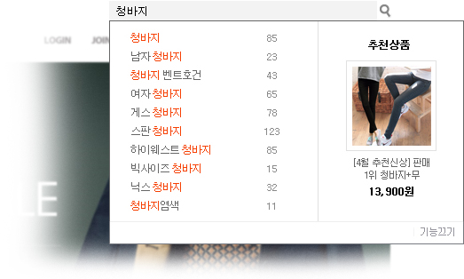

{ #layout_header }

<script type="text/javascript">
// 도로명 주소 설정 표시
function check_zipcode_street(){
	$("table#zipcode_street_table").find("input.zipcode_street").each(function(){
		if( $(this).attr("checked") ){
			$(this).closest("label").addClass('bold');
		}else{
			$(this).closest("label").removeClass('bold');
		}
	});
}
</script>
<script type="text/javascript">
$(document).ready(function() {
    $(".btn-plus").bind("click",function(){
    	if( $(this).closest("table").find("tr").length < 10){ 
			var clone = $(this).closest("tr").clone();
			clone.find(".pagetd").remove();
			clone.find(".btn-plus").addClass("btn-minus").removeClass("btn-plus");    	
			clone.find(".search_result_link").attr("title",'검색어');    	
			clone.find(".search_result_link").val('');
			$(this).closest("table").append(clone);    	 	
			$(this).closest("table").find("tr:first-child").find("td:first-child").attr("rowspan",$(this).closest("table").find("tr").length);
			
			setDefaultText();
		}
    });
    $(".btn-minus").live("click",function(){
    	$(this).closest("tr").remove();
    });
    $(".search_result").live("change",function(){
    	if( $(this).val() == 'direct' ) title = "링크 주소(URL)";
    	else title = "검색어";
    	$(this).closest("tr").find(".search_result_link").val('');
    	$(this).closest("tr").find(".search_result_link").attr("title",title);
    	setDefaultText();
    });

	// 도로명 주소 설정 표시
	$("table#zipcode_street_table").find("input.zipcode_street").change(function(){
		check_zipcode_street();
	});
	check_zipcode_street();
	
	// 무료형일 경우 검색어 저장 기능 제한
	{? service_code =='P_FREE' }
	$("div#search-input-form-div").find("input").attr("disabled",true);
	$("div#search-input-form-div").find("select").attr("disabled",true);
	$("div#update-disabled-div").height( $("div#search-input-form-div").height() );
	{ / }
});
</script>
<style>
/*레이어팝업*/
.layer_pop {border:3px solid #618298; background:#fff;}
.layer_pop .tit {height:45px; font:14px Dotum; letter-spacing:-1px; font-weight:bold; color:#003775; background:#ebf4f2; border-bottom:1px solid #d8dee3; padding:0 10px; border-right:0;}
.layer_pop .search_input {border:1px solid #cecece; height:17px;}
.layer_pop .left {text-align:left;}
table.info-table-style tr td.top {vertical-align:top;}
</style>


<form name="settingForm" method="post" enctype="multipart/form-data" action="../setting_process/search" target="actionFrame">
<!-- 페이지 타이틀 바 : 시작 -->
<div id="page-title-bar-area">
	<div id="page-title-bar" class="gray-bar">
		{#require_info}

		<!-- 타이틀 -->
		<div class="page-title">
			<h2><span class="darkgray">설정 →</span> 상품/주소 검색</h2>
		</div>

		<!-- 우측 버튼 -->
		<ul class="page-buttons-right">
			<li><span class="btn large black"><button type="submit">저장하기<span class="arrowright"></span></button></span></li>
		</ul>

	</div>
</div>
<!-- 페이지 타이틀 바 : 끝 -->

<!-- 서브 레이아웃 영역 : 시작 -->
<div class="sub-layout-container body-height-resizing">

	<!-- 서브메뉴 탭 : 시작 -->
	{ #setting_menu }
	<!-- 서브메뉴 탭 : 끝 -->	
	<!-- 서브메뉴 바디 : 시작-->
	<div class='slc-body-wrap'>
		<div class="slc-body">

			<div class="item-title">페이지별 검색창 기본 검색어
			<!--{? service_code!='P_FREE' }-->
			<span class="desc" style="font-weight:normal;">페이지에 여러 개의 기본 검색어 세팅 시 해당 페이지 기본 검색어는 <span class="red bold">랜덤</span>입니다.</span>
			<!--{ : }-->
			<span class="desc" style="font-weight:normal">기능은 업그레이드가 필요합니다.</span> 
			<!--{ / }-->
			</div>
			<!--{? service_code=='P_FREE' }-->
			<div id="update-disabled-div" style="position:absolute; background-color:#efefef; filter: alpha(opacity=50); -khtml-opacity: 0.5; -moz-opacity:0.5; opacity: 0.5; width:98%; z-index:2"></div> 
			<div id="search-input-form-div" style="z-index:1">
			<!--{ / }-->
			<table width="100%" class="info-table-style">
			
			<col width="200" /><col width="300" /><col width="" />
			<tr>				
				<th class="its-th">페이지</th>
				<th class="its-th">검색창 표기</th>
				<th class="its-th">연결 페이지</th>
			</tr>
			</table>
			
			<!--{ @ cfg_search_word }-->
			<table width="100%" class="info-table-style">
			<col width="200" /><col width="300" /><col width="" />
			<!--{ ? result[.key_] }-->
			<!--{ @ result[.key_] }-->			
			<tr>
				<!--{?..index_==0}-->
				<td class="its-td pagetd" rowspan="{=count(result[.key_])}">
					<label {? service_code=='P_FREE' }disabled{/}>
						<input type="checkbox" name="page_yn[{.key_}]" value="y" {?..page_yn=='y'}checked{/}> {.value_}
					</label>
					<input type="hidden" name="page[{.key_}]" value="1">
				</td>
				<!--{ / }-->				
				<td class="its-td">					
					<input type="text" name="keyword[{.key_}][]" value="{..word}" size="38" title="예시) 쇼핑몰을 아는 사람이라면, 퍼스트몰" />
				</td>
				<td class="its-td">
					<select name="search_result[{.key_}][]" class="search_result">
						<option value="search" {?..search_result == 'search'}selected{/}>검색결과페이지</option>
						<option value="direct" {?..search_result == 'direct'}selected{/}>직접입력</option>
					</select>
								
					<input type="text" name="search_result_link[{.key_}][]" value="{..search_result_link}" size="80" title="검색어" class="search_result_link">
					<select name="search_result_target[{.key_}][]">
						<option value="_self" {?..search_result_target == '_self'}selected{/}>현재창</option>
						<option value="_blank" {?..search_result_target == '_blank'}selected{/}>새창</option>
					</select>
					<!--{?..index_>0}-->
					<span class="btn-minus"><button type="button"></button></span>
					<!--{ : }-->
					<span class="btn-plus"><button type="button"></button></span>
					<!--{ / }-->
				</td>				
			</tr>
			<!--{ / }-->
			<!--{ : }-->
			<tr>
				<td class="its-td pagetd">
					<label>
						<input type="checkbox" name="page_yn[{.key_}]" value="y" {? service_code=='P_FREE' }disabled{/}> {.value_}
					</label>
					<input type="hidden" name="page[{.key_}]" value="1">
				</td>
				<td class="its-td">					
					<input type="text" name="keyword[{.key_}][]" value="" size="38" title="예시) 쇼핑몰을 아는 사람이라면, 퍼스트몰" />
				</td>
				<td class="its-td">
					<select name="search_result[{.key_}][]" class="search_result">
						<option value="search">검색결과페이지</option>
						<option value="direct">직접입력</option>
					</select>
								
					<input type="text" name="search_result_link[{.key_}][]" value="" size="80" title="검색어" class="search_result_link">
					<select name="search_result_target[{.key_}][]">
						<option value="_self">현재창</option>
						<option value="_blank">새창</option>
					</select>
					
					<span class="btn-plus"><button type="button"></button></span>
				</td>				
			</tr>
			<!--{ / }-->
			</table>
			<!--{ / }-->			

			<div class="item-title">인기 검색어 / 검색어 자동완성</div>

			<table width="100%" class="info-table-style">
			<col width="50%" /><col width="50%" />
			<tr>
			<th class="its-th">인기 검색어 (검색어 입력 전 동작)</th>
			<th class="its-th">검색어 자동완성 (검색어 입력 후 동작)</th>
			</tr>
			<tr>
				<td class="its-td">
					<label><input type="checkbox" name="popular_search" value="y" {? cfg_search.popular_search == 'y'}checked{/} {? service_code=='P_FREE' }disabled{/}> 사용합니다</label>
					→ 최근 
					<select name="popular_search_limit_day">
						<option value="15" {? cfg_search.popular_search_limit_day == '15'}selected{/}>15</option>
						<option value="30" {? cfg_search.popular_search_limit_day == '30'}selected{/}>30</option>
						<option value="60" {? cfg_search.popular_search_limit_day == '60'}selected{/}>60</option>
						<option value="90" {? cfg_search.popular_search_limit_day == '90'}selected{/}>90</option>
					</select>
					일 동안 가장 많이 검색된 검색어					
				</td>
				<td class="its-td">
					<label><input type="checkbox" name="auto_search" value="y" {? cfg_search.auto_search == 'y'}checked{/} {? service_code=='P_FREE' }disabled{/}> 사용합니다</label>
					→ 누적되어 저장된 검색 데이터로 검색어 자동 완성					
				</td>
			</tr>
			<tr>
				<td class="its-td-align pdl10">
					<div>추천상품 :</div>
					<table class="info-table-style">
						<tr>
							<th class="its-th-align pd5" align="center">경우</th>
							<th class="its-th-align pd5" align="center">기간</th>
							<th class="its-th-align pd5" align="center">기준</th>
							<th class="its-th-align pd5" align="center">현재상태</th>
							<th class="its-th-align pd5" align="center">랜덤</th>
						</tr>
						<tr>
							<td class="its-td-align pd5">판매 데이터有</td>
							<td class="its-td-align pd5">
								최근
								<select name="popular_search_recomm_limit_day">
									<option value="15" {? cfg_search.popular_search_recomm_limit_day == '15'}selected{/}>15일</option>
									<option value="30" {? cfg_search.popular_search_recomm_limit_day == '30'}selected{/}>30일</option>
									<option value="60" {? cfg_search.popular_search_recomm_limit_day == '60'}selected{/}>60일</option>
									<option value="90" {? cfg_search.popular_search_recomm_limit_day == '90'}selected{/}>90일</option>
								</select>
							</td>
							<td class="its-td-align pd5">구매수량↑ 구매금액↑</td>
							<td class="its-td-align pd5">정상</td>
							<td class="its-td-align pd5">20개</td>
						</tr>
						<tr>
							<td class="its-td-align pd5">판매 데이터無</td>
							<td class="its-td-align pd5">
								누적
							</td>
							<td class="its-td-align pd5">상품평↑ 장바구니↑ 위시리스트↑ 좋아요↑ 구매수량↑</td>
							<td class="its-td-align pd5">정상</td>
							<td class="its-td-align pd5">20개</td>
						</tr>
					</table>					
				</td>
				<td class="its-td-align pdl10"> 
					<div>추천상품 :</div>
					<table class="info-table-style">
						<tr>
							<th class="its-th-align pd5" align="center">경우</th>
							<th class="its-th-align pd5" align="center">기간</th>
							<th class="its-th-align pd5" align="center">기준</th>
							<th class="its-th-align pd5" align="center">현재상태</th>
							<th class="its-th-align pd5" align="center">랜덤</th>
						</tr>
						<tr>
							<td class="its-td-align pd5">판매 데이터有</td>
							<td class="its-td-align pd5">
								최근
								<select name="auto_search_recomm_limit_day">
									<option value="15" {? cfg_search.auto_search_recomm_limit_day == '15'}selected{/}>15일</option>
									<option value="30" {? cfg_search.auto_search_recomm_limit_day == '30'}selected{/}>30일</option>
									<option value="60" {? cfg_search.auto_search_recomm_limit_day == '60'}selected{/}>60일</option>
									<option value="90" {? cfg_search.auto_search_recomm_limit_day == '90'}selected{/}>90일</option>
								</select>
							</td>
							<td class="its-td-align pd5">검색어(카테고리,상품명)분석, 구매수량↑ 구매금액↑</td>
							<td class="its-td-align pd5">정상</td>
							<td class="its-td-align pd5">20개</td>
						</tr>
						<tr>
							<td class="its-td-align pd5">판매 데이터無</td>
							<td class="its-td-align pd5">
								누적
							</td>
							<td class="its-td-align pd5">상품평↑ 장바구니↑ 위시리스트↑ 좋아요↑ 구매수량↑</td>
							<td class="its-td-align pd5">정상</td>
							<td class="its-td-align pd5">20개</td>
						</tr>
					</table>				
					
				</td>
			</tr>
			<tr>
				<td class="its-td">
					
				</td>
				<td class="its-td">
				
				</td>
			</tr>

			</table>
			<!--{? service_code == 'P_FREE' }-->
			</div>			
			<!--{ / }-->
			
			<div class="item-title">주소 검색</div>			
			<table width="100%" class="info-table-style" id="zipcode_street_table">
			<col width="20%" /><col />
			<tr>
				<th class="its-th">
					주소 검색창 사용 페이지
				</th>
				<td class="its-td">
					실물 배송상품 주문, 회원가입, 회원정보수정
				</td>
			</tr>
			<tr>
				<th class="its-th">
					주소 검색창 설정
					<br/><span class="desc">※ 최소 1개 이상 선택</span>
				</th>
				<td class="its-td">
					<table>
					<col width="370" /><col/>
						<tr>
							<td class="top">
								<label><input type="checkbox" name="zipcode_street" class="zipcode_street" value="1" {?cfg_zipcode.zipcode_street}checked{/} /> 도로명 주소 검색을 유저가 사용할 수 있게 합니다</label>
							</td>
							<td class="pdl5 top">
								<span class="desc">도로명 주소로 검색하여 주소를 저장하며, 새로운 지번 주소도 함께 저장합니다.</span>
							</td>
						</tr>
						<tr>
							<td class="top">
								<label><input type="checkbox" name="new_zipcode_lot_number"  class="zipcode_street" value="1" {?cfg_zipcode.new_zipcode_lot_number}checked{/} /> 지번 주소 검색을 유저가 사용할 수 있게 합니다</label>
							</td>
							<td class="pdl5 top">
								<span class="desc">새로운 지번 주소로 검색하여 주소를 저장하며, 도로명 주소도 함께 저장합니다.</span>
							</td>
						</tr>
						<tr>
							<td class="top">
								<label><input type="checkbox" name="old_zipcode_lot_number"  class="zipcode_street" value="1" {?cfg_zipcode.old_zipcode_lot_number}checked{/} /> (구)지번 주소 검색을 유저가 사용할 수 있게 합니다  </label>
							</td>
							<td class="pdl5 top">
								<span class="desc">도로명 주소 이전에 사용되던 지번 주소로 검색하여 주소를 저장합니다. 
							<br/>(구 지번 주소로는 도로명 주소를 알 수 없기 때문에 도로명 주소는 저장되지 않습니다)</span>
							</td>							
						</tr>
						<!--
						<tr>
							<td>
								안내이미지
							</td>
						</tr>
						-->
					</table>					
				</td>
			</tr>
			</table>

			

		<div id="html_error"></div>
	</div>
	<!-- 서브메뉴 바디 : 끝 -->
</div>
<!-- 서브 레이아웃 영역 : 끝 -->
</form>
{ #layout_footer }